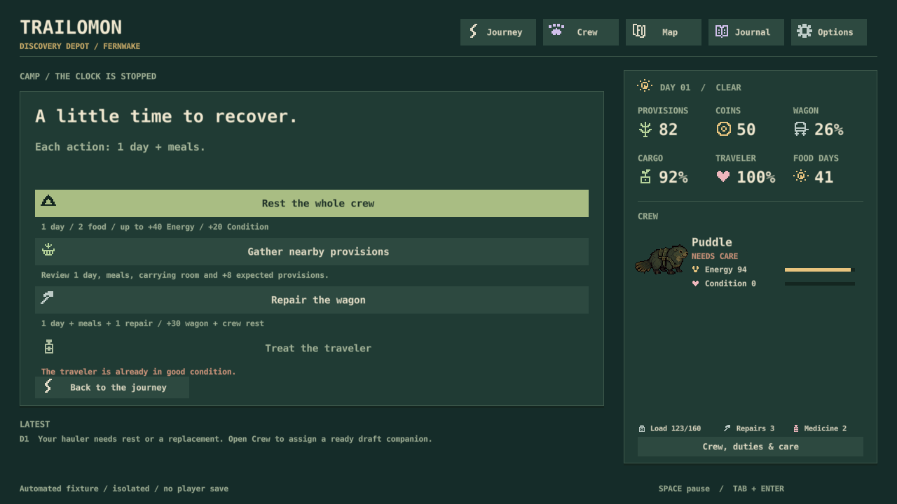
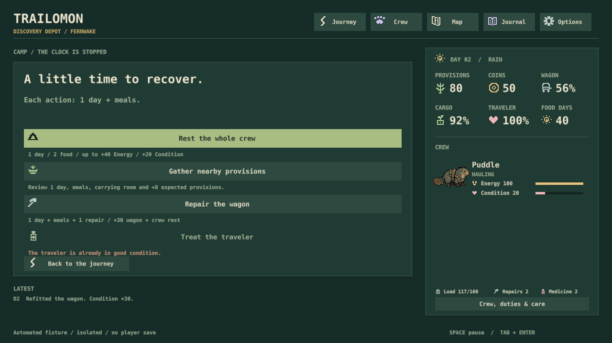

S5 / November 2, 2026
Recover once. Make room for discovery.
A bounded recovery pass for solo starts and small crews. Implemented under your S5 direction; no repeat votes.
What changed
- Fed camp: up to 40 Energy / 20 Condition, previously 25 / 8.
- Repairing the wagon also gives camp recovery. Still one day, meals and one repair material.
- Medicine keeps its +35 bonus and includes camp recovery.
- Existing saves keep their old rules. The new values start with the next expedition.

More room for two searches
Matched seeds 1–24, normal rations and fixed visible-state policies. These are on-time deliveries, not human ratings.
| Discovery approach | Before | After |
|---|---|---|
| Brindlehorn: recruit, adaptive pace, two searches | 13/24 | 20/24 |
| Brindlehorn: stay solo, two searches | 12/24 | 19/24 |
| Reedskipper: stay solo, two searches | 12/24 | 19/24 |
| Reedskipper: recruit, adaptive pace, two searches | 24/24 | 24/24 |
| Brindlehorn: meadow, recruit, two searches | 20/24 | 24/24 |
For Brindlehorn's first row, mean recovery falls from 1.67 to 1.25 days and 6.67 to 5.00 provisions. Mean arrival moves from day 26.3 to 25.5. Cargo averages 84.4 → 82.7: changing travel and weather can trade some cargo for speed.
The trail still asks you to choose
Search costs and day 26/32 deadlines are unchanged. Searching every stretch still makes Brindlehorn's trip usually late. Steady woodland travel plus two searches is also tight. Routes, gear, recruitment and pace matter; a shorter route and selective searches can work without padded trace.
The safer policy feeds or avoids threats while solo, then fights with two healthy companions. It wins all sampled fights. Fighting every threat still loses some early encounters. Recovery helps a setback remain playable; the enemies were not weakened.
Checked in the actual game

The Rest and Repair buttons were exercised after a real simulated solo loss. One day and meals are paid; crew and wagon changes appear correctly. The legacy screen still shows 25 / 8. The fixture deliberately exposes the wagon with a rear-positioned solo creature; it is not advice for a strong formation.
154 simulation tests, native old/new saves in both depots, four rendered screens and 1,152 matched journeys, each repeated exactly. No known failing automated checks. Human pacing, physical input and sound remain S10 work.
Methods and limits
960 Discovery journeys test both starters and ten policies under previous/current recovery; 192 Classic journeys test four policies. No hidden RNG or track results are read. Adaptive pace uses hurried at 35+ Energy, otherwise steady; ready haulers can rotate. Policies normally recruit, care for injured companions and use carried battle supplies. Variants isolate solo parties, forced fighting, supplies, meadow and padded trace. All searches still consume time and meals. These fixed policies are not optimal players; late deliveries remain successful arrivals, not rescues. All-source evidence and exact rows are linked below.
Discovery results · Classic check · Provenance and limits
Next: S10's full-trip feel check, then the approved symbiotic creature pair. The broader S5 balance work remains open.